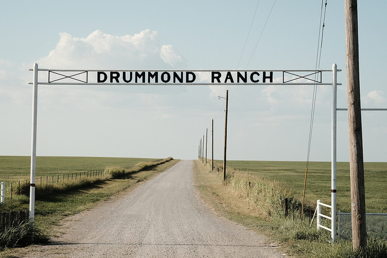

Aller au contenu
FUJIFILM
DAILY
Archives
Apparence
Système
Clair
Sombre
Le journal photographique ·
dimanche 8 novembre 2026
FUJIFILM DAILY

© Ritchie Roesch / Fuji X Weekly — Drummond Ranch · X-Pro2, Kodachrome II. ·
Source de l’image
Dernière édition
Le dimanche des couleurs et du geste juste
Ouvrir le numéro
↗
Télécharger le PDF
Les archives
Dans ce numéro
L’atelier Fuji
X-Pro2 : retrouver le plaisir de la couleur avec Kodachrome II
01
L’atelier Fuji
JPEG de rue : choisir quand la clarté mérite une pause
02